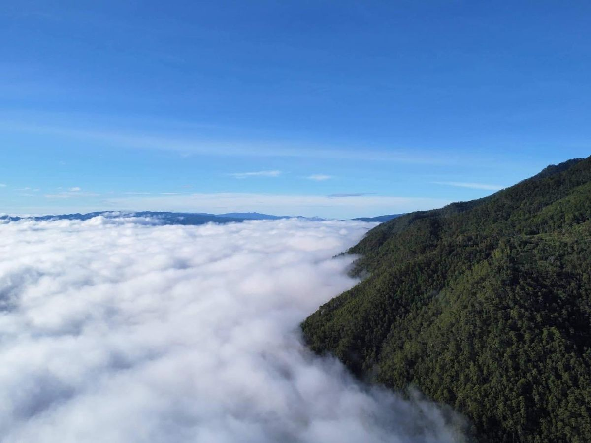
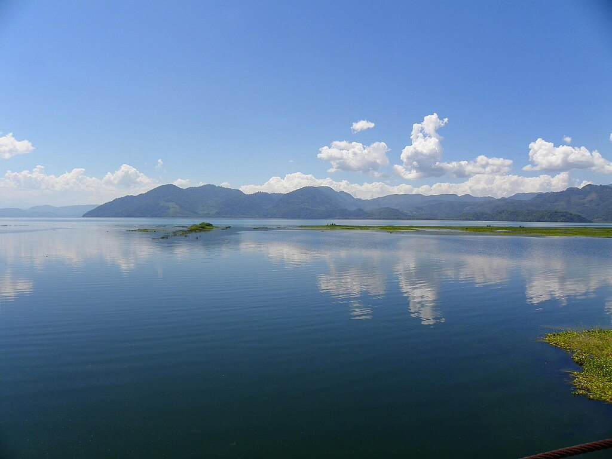
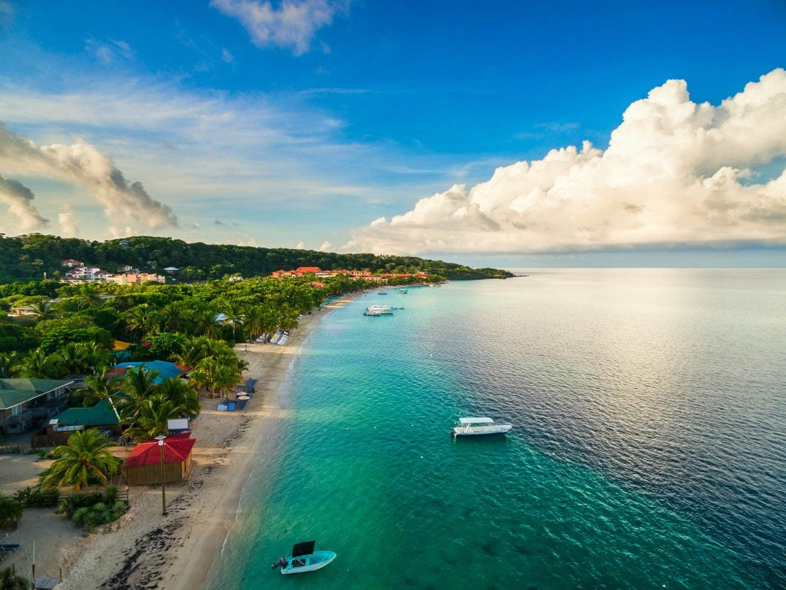

¡Descubre Honduras como nunca antes!
Explora nuestras opciones
 Copan Ruinas
Copan Ruinas
Ruinas, Macaw Mountain y Luna Jaguar
Ciudad Maya declarada Patrimonio de la Humanidad en 1980.

Parque Nacional Celaque
Cerro de Las Minas
Hogar del punto más alto de Honduras, donde puedes hacer montañismo, acampada y exploración de bosque nublado.
 Gracias, Lempira
Gracias, Lempira
Fortaleza San Cristobal
Pueblo colonial con historia y encanto natural, en donde puedes visitar sus aguas termales.

Lago de Yojoa
Lago de Yojoa
Lago natural rodeado de montañas y cascadas, con actividades de kayak, avistamiento de aves y senderismo.

Islas de la bahia
Roatan, Utila y Guanaja
Islas caribeñas famosas por sus playas de arena blanca, aguas turquesas y excelentes oportunidades para el buceo y snorkel.